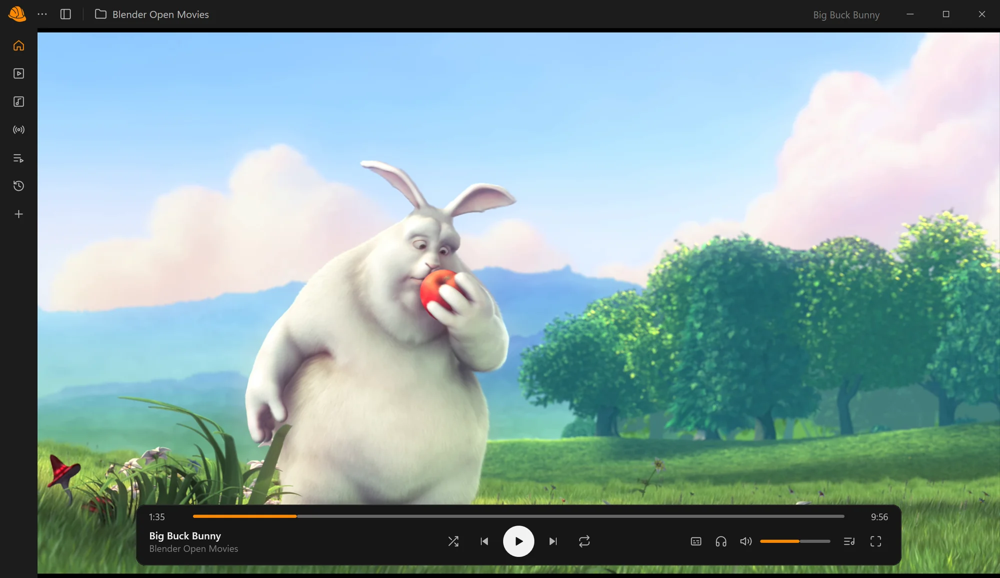

Hard Hat Media Player
A free, open-source media player for Windows
A clean, modern interface with playback powered by libVLC, the engine behind VLC.
Windows 10 and 11 · 64-bit · No installer, just unzip and run

Features
-
Plays almost anything
Everything libVLC plays: local files, folders and network streams (http, rtsp, udp…).
-
A real library
Continue Watching with resume points, episodes in order with autoplay, and music by song, album, artist and genre.
-
A player that stays out of the way
Auto-hiding controls, subtitle and audio tracks, speed, shuffle and repeat, and true fullscreen.
-
Keyboard friendly
On-screen feedback for every action with its shortcut, and a cheat sheet on F1.
-
Online subtitles
Search OpenSubtitles.com by file hash or name, and fetch exact matches automatically.
-
Free and open source
GPL-3.0 licensed, no ads, no tracking. Contributions are welcome.